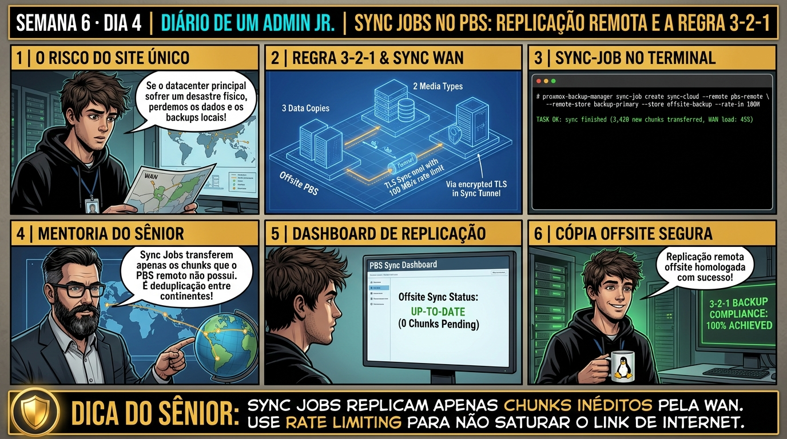

DIARIO DE UM ADMIN JR. | PROXMOX VE & PBS — DA BASE AO CLUSTER
Antes de começar — 20 segundos de memória (Dia 3)
1. Ontem, qual protocolo o File-Level Restore usa pra montar o sistema de arquivos do backup sem ligar a VM? 2. Até agora, todo backup ficava guardado num único servidor PBS. Hoje a regra 3-2-1 exige uma segunda cópia OFFSITE. O que muda em ter duas cópias em vez de uma, se as duas ficam no mesmo prédio?
1. FUSE. 2. Nada — é exatamente por isso que "offsite" é a parte que importa: se as duas cópias estão no mesmo prédio, um incêndio, um roubo ou uma falha elétrica destrói as duas ao mesmo tempo. A regra 3-2-1 exige pelo menos uma cópia fisicamente em outro lugar, não só duas cópias quaisquer.
🔗 Conecta com o Dia 3: Você dominou as técnicas de restauração local. Hoje você protege a empresa contra a destruição física do datacenter: implementando a regra 3-2-1 de backup através de Sync Jobs remotos entre múltiplos servidores PBS com criptografia TLS e limitação de banda.
🔓 Privilégio de hoje: Replicação Geográfica e Resiliência Offsite. Você configura conexões Remote no PBS, agenda Sync Jobs e monitora replicação WAN.
Semana 6 · Dia 4 | Nível Júnior — Estratégias de Backup, Restore & DR
Sync Jobs Remotos e Replicação Offsite entre Servidores PBS
Implementando a regra 3-2-1 de backup com replicação segura via WAN entre filiais e nuvem
ANTES DE ALTERAR, OBSERVE. DEPOIS DE ALTERAR, VALIDE.

1. O chamado
#6004PRIORIDADE MÉDIA15:30aberto por: diretoria de TI
"Precisamos replicar os backups da Matriz para o servidor Offsite todo dia, sem saturar o link de 100Mbps durante o horário comercial."
Copiar tudo de novo todo dia não cabe no link. Como o PBS evita reenviar o que o outro lado já tem?
💡 Passa o mouse nas palavras destacadas pra ver uma dica rápida — clica se quiser a explicação completa com analogia.
2. O sênior te conta
🧑🏫 antes dos termos técnicos, a história de hoje
Hoje o auditor de segurança perguntou o que aconteceria com os backups da empresa se o prédio principal sofresse um incêndio ou inundação. O Júnior respondeu que os backups estavam seguros no servidor PBS do rack ao lado. O auditor anotou 'Não-Conformidade Grave' no relatório.
Expliquei pro Júnior a sagrada Regra de Backup 3-2-1: você precisa ter 3 cópias dos dados, em 2 mídias diferentes, com 1 cópia fora do prédio (offsite). Mostrei como o PBS resolve isso de forma elegante com os Sync Jobs.
Configuramos um PBS secundário em outro datacenter, criamos uma tarefa de sincronização com controle de banda (--rate-in 50M) e replicamos apenas os chunks novos pela internet de madrugada. O Júnior viu a segunda cópia verde no dashboard e blindou a empresa contra desastres físicos.
3. Decodificador de conceitos
Clica em qualquer termo pra ver a definição completa e uma analogia do dia a dia:
4. Ferramentas e leitura da evidência
Comando / Parâmetro
O que observar e por que importa
proxmox-backup-manager remote list
Lista todas as conexões remotas cadastradas no servidor PBS local.
Registra uma conexão com outro servidor PBS remoto, identificada pelo apelido 'pbs-offsite'.
--server pbs.datacenter2.com
O endereço do servidor PBS remoto, tipicamente em outro datacenter — a base da estratégia de backup 3-2-1 (uma cópia fora do local principal).
--auth-id sync-bot@pbs!token
A identidade (usuário + token) usada para autenticar nesse servidor remoto.
--fingerprint
A impressão digital do certificado TLS do servidor remoto, necessária para confiar na conexão.
Resultado esperado: Endpoint remoto salvo com sucesso.
Por que fizemos isso: Configurar um Remote PBS em outro datacenter e criar uma tarefa de Sync Job garante que os backups sejam replicados para fora do prédio (offsite).
Cilada comum: Manter todos os backups no mesmo local físico da produção, violando a Regra 3-2-1 e arriscando perda total em caso de incêndio ou enchente.
Ação: Crie uma tarefa de Sync Job vinculada ao remote configurando limite de banda.
Cria uma tarefa agendada de sincronização entre datastores, com o nome 'sync-remote-tank'.
--remote pbs-offsite
O servidor remoto de origem (ou destino) configurado no passo anterior.
--remote-store tank-backup
O datastore no lado remoto envolvido na sincronização.
--store tank-offsite
O datastore local (ou de destino) envolvido na sincronização.
--rate-in 50M
Limita a velocidade de transferência a 50 megabytes por segundo, evitando que o sync sature o link de internet da empresa.
Resultado esperado: Sync Job programado no agendador.
Por que fizemos isso: O Sync Job transfere exclusivamente os chunks novos que o servidor de destino ainda não possui, minimizando o uso do link de WAN.
Cilada comum: Fazer cópias manuais de arquivos gigantes pela rede em vez de usar os Sync Jobs otimizados do PBS.
Se o seu resultado foi diferente
o sync job foi criado mas nunca roda sozinho no horário esperado → create só define o job — confirme se um --schedule foi configurado também (via GUI ou flag), do contrário ele só executa quando disparado manualmente com sync-job run.
Ação: Dispare a sincronização manual e acompanhe o tráfego exclusivo de chunks novos.
proxmox-backup-manager sync-job run sync-remote-tank
🔍 Detalhar esse comando
sync-job run
Dispara manualmente (fora do agendamento) um sync-job já configurado, iniciando a sincronização imediatamente.
sync-remote-tank
O nome do sync-job a disparar, criado no passo anterior, com o remote e o limite de banda já definidos.
Resultado esperado: Sincronização de chunks em andamento.
Por que fizemos isso: A flag --rate-in limita a largura de banda utilizada pela sincronização, impedindo que o tráfego de backup sature o link de Internet da empresa.
Cilada comum: Rodar sync jobs sem controle de banda durante o horário comercial, degradando o acesso à Internet de todos os colaboradores.
Ação: Inspecione o datastore remoto confirmando a presença da réplica 3-2-1 offsite.
proxmox-backup-manager datastore status tank-offsite
🔍 Detalhar esse comando
datastore status
Consulta o estado atual de um datastore — espaço usado e livre.
tank-offsite
O datastore de destino da réplica, no PBS remoto — consultado aqui para confirmar que a sincronização realmente chegou e ocupou espaço nele.
Resultado esperado: Deduplicação de tráfego comprovada com sucesso.
Por que fizemos isso: Validar o status Quorum e saúde do datastore remoto confirma que a segunda cópia de segurança está 100% pronta para contingência.
Cilada comum: Esquecer de monitorar o espaço em disco do PBS remoto, descobrindo que as sincronizações falharam há semanas por falta de storage.
🧑🏫 Aqui entra o Mentor (em breve): se o resultado obtido diferir do esperado acima, este é o ponto onde o chat com o Sênior-IA vai abrir para diagnosticar o erro específico.
Ação: Formalize o atendimento à Regra de Backup 3-2-1 no relatório de compliance.
# Replicação remota e Regra 3-2-1 homologadas.
Resultado esperado: Conformidade de segurança e DR arquivada com aprovação.
Por que fizemos isso: Documentar a topologia de replicação 3-2-1 no manual de compliance assegura conformidade com as normas ISO 27001 e SOC 2.
Cilada comum: Não realizar testes de restauração a partir do servidor remoto para validar se os dados replicados estão íntegros.
6. Antes de ver as opções — tenta responder
🧠 Recall ativo: Por que a replicação de backups via Sync Jobs entre dois servidores PBS é incomparavelmente mais rápida e eficiente do que usar rsync ou cópia de arquivos tradicional pela internet?
Porque o protocolo de Sync do PBS opera em **nível de Chunks e Índices**. O servidor de destino compara a lista de hashes SHA-256 que ele já possui em seu datastore com os hashes do servidor de origem: ele faz o download estritamente dos chunks que ainda não existem no destino. Se 98% dos blocos já foram sincronizados em dias anteriores, a replicação WAN de um backup de 1TB transfere apenas os 2% de chunks novos, gastando pouquíssimos megabytes de link de internet.
QUESTÃO 1 de 3
7. Questão comentada — clica numa alternativa
Qual comando no Proxmox Backup Server cadastra corretamente uma conexão remota (Remote) apontando para o servidor PBS offsite?
💡 Analogia do Sênior para Fixar: A deduplicação do PBS em chunks de 4MB é a biblioteca central: se 100 VMs usam o mesmo Windows, aquele arquivo só é gravado uma única vez no storage.
QUESTÃO 2 de 3 — cenário de erro real
7.1 Falha de autenticação TLS ao tentar sincronizar com o Remote
O Sync Job falhou com a mensagem: 'SSL certificate verification failed: fingerprint mismatch':
TASK ERROR: remote connection failed: SSL fingerprint mismatch!
expected: 2b:3c:4d...
received: 99:aa:bb...
(O certificado SSL do servidor PBS remoto foi renovado ou o IP está sob ataque MITM)
Qual é a conduta correta de segurança antes de atualizar o fingerprint?
💡 Analogia do Sênior para Fixar: O Verify Job do Proxmox Backup Server é o simulado de incêndio: testa a integridade criptográfica de cada snapshot sem precisar ligar as VMs.
QUESTÃO 3 de 3 — detalhe que confunde todo iniciante
7.2 Qual a diferença entre Pull Sync e Push Sync no Proxmox Backup Server?
A equipe debate se o servidor da Matriz deve 'enviar' (Push) ou a Nuvem deve 'puxar' (Pull) os backups:
Por que a arquitetura 'Pull' do PBS é considerada superior para segurança contra ransomware?
💡 Analogia do Sênior para Fixar: O Live-Restore é o streaming de vídeo: a máquina virtual dá boot em 3 segundos e você já trabalha enquanto o resto do disco baixa em segundo plano.
8. Procedimento profissional
Para atender a compliance de missão crítica, implemente sempre a Regra 3-2-1 de backup com um PBS Offsite.
Cadastre o Remote Endpoint no servidor PBS de destino com Token de autenticação dedicado e SSL Fingerprint.
Crie um Sync Job agendado para rodar de madrugada após a conclusão dos backups locais.
Defina o parâmetro de rate-in para limitar a taxa de download e preservar a banda de internet corporativa.
Monitore os logs de sincronização e certifique-se de que a replicação atinge status TASK OK diariamente.
Prevenção
Execute simulados regulares de Disaster Recovery em rede isolada para homologar os tempos de RTO e RPO contratados com a diretoria.
9. Validação e encerramento
Você compreende a eficiência extrema dos Sync Jobs em nível de Chunks e Hashes SHA-256.
Você domina a implementação da Regra 3-2-1 com PBS Offsite e modelo Pull anti-ransomware.
Você sabe como calibrar limites de banda (Rate Limiting) para links WAN corporativos.
A estratégia de replicação geográfica de backups foi homologada com sucesso.
Rollback e limites
Para pausar ou desativar um Sync Job sem deletar dados, execute proxmox-backup-manager sync-job update JOBID --delete schedule.
💡 Sobre repetição espaçada: A construção do Plano de Disaster Recovery (DR) completo e o cálculo de RTO/RPO será o tema de fechamento da Semana 6 amanhã no Dia 5.
10. Resposta final
Alternativa correta: B. A resposta correta é a B: o comando proxmox-backup-manager remote create cadastra o endpoint remoto com autenticação e validação de SSL Fingerprint.
🔓 O que você desbloqueou hoje
Sync Jobs remotos e Regra 3-2-1 dominados com perfeição! Amanhã, no Dia 5, você fechará a Semana 6 dominando o Plano de Disaster Recovery (DR): aprendendo a calcular RTO e RPO, desenhar playbooks de contingência e simular a recuperação de desastre após perda total de um datacenter.